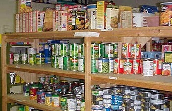

WELCOME TO THE ROBIN HOOD METRICS CALCULATOR!
At Robin Hood, we have a unique approach to fighting poverty. Using our research-driven metrics, we’re able to judge the social impact of a given charity on impoverished New Yorkers and direct funding to where it will do the greatest good.
This Metrics Calculator will let you experience evaluating the impact of a poverty-fighting program. Click on one of the sample hypothetical charities below to get started.

|
 |